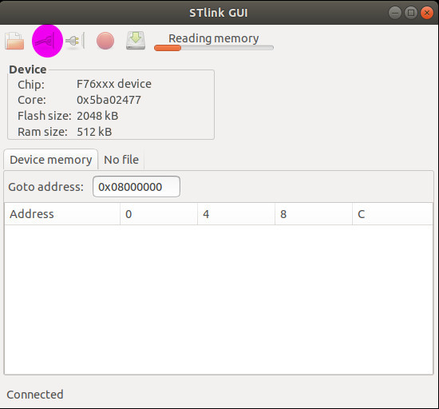

2.5 Test On Nucleo-144 STM32F767ZI
Finally, we come to test out some examples on board Nucleo-144 STM32F767ZI.
2.5.1 Plug in Nucleo-144 STM32F767ZI
We first plug in the board Nucleo-144 STM32F767ZI as follows:

- On one side, plugging in the STLink USB port with the host computer is demonstrated by command lsusb.
$ lsusb
...
Bus 001 Device 005: ID 0483:374b STMicroelectronics ST-LINK/V2.1 (Nucleo-F103RB)
...
If we had ST-Link successfully installed, we can also demonstrate its existance by command st-info --probe.
$ st-info --probe
Found 1 stlink programmers
serial: 303636454646333333303336343334
openocd: "\x30\x36\x36\x45\x46\x46\x33\x33\x33\x30\x33\x36\x34\x33\x34"
flash: 2097152 (pagesize: 2048)
sram: 524288
chipid: 0x0451
descr: F76xxx device
- On the other side, plugging in the other USB port for Nucleo-144 STM32F767ZI will be demonstrated by our test code.
2.5.2 Create and Build Project
Similar to previous section, this time, we create a Blinky C/C++ project with board configuration STM32F7xx with Chip family STM32F767xx. And we can also have the project successfully built with Release configuration with the following output:
17:57:31 **** Build of configuration Release for project F767ZI_Blinky ****
make all
Building file: ../system/src/stm32f7-hal/stm32f7xx_hal.c
Invoking: GNU ARM Cross C Compiler
arm-none-eabi-gcc -mcpu=cortex-m7 -mthumb -mfloat-abi=soft -Os -fmessage-length=0 -fsigned-char -ffunction-sections -fdata-sections -Wall -Wextra -g -DOS_USE_SEMIHOSTING -DNDEBUG -DSTM32F767xx -DUSE_HAL_DRIVER -DHSE_VALUE=8000000 -I"../include" -I"../system/include" -I"../system/include/cmsis" -I"../system/include/stm32f7-hal" -std=gnu11 -Wno-bad-function-cast -Wno-conversion -Wno-sign-conversion -Wno-unused-parameter -Wno-sign-compare -Wno-missing-prototypes -Wno-missing-declarations -MMD -MP -MF"system/src/stm32f7-hal/stm32f7xx_hal.d" -MT"system/src/stm32f7-hal/stm32f7xx_hal.o" -c -o "system/src/stm32f7-hal/stm32f7xx_hal.o" "../system/src/stm32f7-hal/stm32f7xx_hal.c"
Finished building: ../system/src/stm32f7-hal/stm32f7xx_hal.c
Building file: ../system/src/stm32f7-hal/stm32f7xx_hal_cortex.c
Invoking: GNU ARM Cross C Compiler
arm-none-eabi-gcc -mcpu=cortex-m7 -mthumb -mfloat-abi=soft -Os -fmessage-length=0 -fsigned-char -ffunction-sections -fdata-sections -Wall -Wextra -g -DOS_USE_SEMIHOSTING -DNDEBUG -DSTM32F767xx -DUSE_HAL_DRIVER -DHSE_VALUE=8000000 -I"../include" -I"../system/include" -I"../system/include/cmsis" -I"../system/include/stm32f7-hal" -std=gnu11 -Wno-bad-function-cast -Wno-conversion -Wno-sign-conversion -Wno-unused-parameter -Wno-sign-compare -Wno-missing-prototypes -Wno-missing-declarations -MMD -MP -MF"system/src/stm32f7-hal/stm32f7xx_hal_cortex.d" -MT"system/src/stm32f7-hal/stm32f7xx_hal_cortex.o" -c -o "system/src/stm32f7-hal/stm32f7xx_hal_cortex.o" "../system/src/stm32f7-hal/stm32f7xx_hal_cortex.c"
Finished building: ../system/src/stm32f7-hal/stm32f7xx_hal_cortex.c
Building file: ../system/src/stm32f7-hal/stm32f7xx_hal_crc_ex.c
Invoking: GNU ARM Cross C Compiler
arm-none-eabi-gcc -mcpu=cortex-m7 -mthumb -mfloat-abi=soft -Os -fmessage-length=0 -fsigned-char -ffunction-sections -fdata-sections -Wall -Wextra -g -DOS_USE_SEMIHOSTING -DNDEBUG -DSTM32F767xx -DUSE_HAL_DRIVER -DHSE_VALUE=8000000 -I"../include" -I"../system/include" -I"../system/include/cmsis" -I"../system/include/stm32f7-hal" -std=gnu11 -Wno-bad-function-cast -Wno-conversion -Wno-sign-conversion -Wno-unused-parameter -Wno-sign-compare -Wno-missing-prototypes -Wno-missing-declarations -MMD -MP -MF"system/src/stm32f7-hal/stm32f7xx_hal_crc_ex.d" -MT"system/src/stm32f7-hal/stm32f7xx_hal_crc_ex.o" -c -o "system/src/stm32f7-hal/stm32f7xx_hal_crc_ex.o" "../system/src/stm32f7-hal/stm32f7xx_hal_crc_ex.c"
Finished building: ../system/src/stm32f7-hal/stm32f7xx_hal_crc_ex.c
Building file: ../system/src/stm32f7-hal/stm32f7xx_hal_dfsdm.c
Invoking: GNU ARM Cross C Compiler
arm-none-eabi-gcc -mcpu=cortex-m7 -mthumb -mfloat-abi=soft -Os -fmessage-length=0 -fsigned-char -ffunction-sections -fdata-sections -Wall -Wextra -g -DOS_USE_SEMIHOSTING -DNDEBUG -DSTM32F767xx -DUSE_HAL_DRIVER -DHSE_VALUE=8000000 -I"../include" -I"../system/include" -I"../system/include/cmsis" -I"../system/include/stm32f7-hal" -std=gnu11 -Wno-bad-function-cast -Wno-conversion -Wno-sign-conversion -Wno-unused-parameter -Wno-sign-compare -Wno-missing-prototypes -Wno-missing-declarations -MMD -MP -MF"system/src/stm32f7-hal/stm32f7xx_hal_dfsdm.d" -MT"system/src/stm32f7-hal/stm32f7xx_hal_dfsdm.o" -c -o "system/src/stm32f7-hal/stm32f7xx_hal_dfsdm.o" "../system/src/stm32f7-hal/stm32f7xx_hal_dfsdm.c"
Finished building: ../system/src/stm32f7-hal/stm32f7xx_hal_dfsdm.c
Building file: ../system/src/stm32f7-hal/stm32f7xx_hal_flash.c
Invoking: GNU ARM Cross C Compiler
arm-none-eabi-gcc -mcpu=cortex-m7 -mthumb -mfloat-abi=soft -Os -fmessage-length=0 -fsigned-char -ffunction-sections -fdata-sections -Wall -Wextra -g -DOS_USE_SEMIHOSTING -DNDEBUG -DSTM32F767xx -DUSE_HAL_DRIVER -DHSE_VALUE=8000000 -I"../include" -I"../system/include" -I"../system/include/cmsis" -I"../system/include/stm32f7-hal" -std=gnu11 -Wno-bad-function-cast -Wno-conversion -Wno-sign-conversion -Wno-unused-parameter -Wno-sign-compare -Wno-missing-prototypes -Wno-missing-declarations -MMD -MP -MF"system/src/stm32f7-hal/stm32f7xx_hal_flash.d" -MT"system/src/stm32f7-hal/stm32f7xx_hal_flash.o" -c -o "system/src/stm32f7-hal/stm32f7xx_hal_flash.o" "../system/src/stm32f7-hal/stm32f7xx_hal_flash.c"
Finished building: ../system/src/stm32f7-hal/stm32f7xx_hal_flash.c
Building file: ../system/src/stm32f7-hal/stm32f7xx_hal_gpio.c
Invoking: GNU ARM Cross C Compiler
arm-none-eabi-gcc -mcpu=cortex-m7 -mthumb -mfloat-abi=soft -Os -fmessage-length=0 -fsigned-char -ffunction-sections -fdata-sections -Wall -Wextra -g -DOS_USE_SEMIHOSTING -DNDEBUG -DSTM32F767xx -DUSE_HAL_DRIVER -DHSE_VALUE=8000000 -I"../include" -I"../system/include" -I"../system/include/cmsis" -I"../system/include/stm32f7-hal" -std=gnu11 -Wno-bad-function-cast -Wno-conversion -Wno-sign-conversion -Wno-unused-parameter -Wno-sign-compare -Wno-missing-prototypes -Wno-missing-declarations -MMD -MP -MF"system/src/stm32f7-hal/stm32f7xx_hal_gpio.d" -MT"system/src/stm32f7-hal/stm32f7xx_hal_gpio.o" -c -o "system/src/stm32f7-hal/stm32f7xx_hal_gpio.o" "../system/src/stm32f7-hal/stm32f7xx_hal_gpio.c"
Finished building: ../system/src/stm32f7-hal/stm32f7xx_hal_gpio.c
Building file: ../system/src/stm32f7-hal/stm32f7xx_hal_iwdg.c
Invoking: GNU ARM Cross C Compiler
arm-none-eabi-gcc -mcpu=cortex-m7 -mthumb -mfloat-abi=soft -Os -fmessage-length=0 -fsigned-char -ffunction-sections -fdata-sections -Wall -Wextra -g -DOS_USE_SEMIHOSTING -DNDEBUG -DSTM32F767xx -DUSE_HAL_DRIVER -DHSE_VALUE=8000000 -I"../include" -I"../system/include" -I"../system/include/cmsis" -I"../system/include/stm32f7-hal" -std=gnu11 -Wno-bad-function-cast -Wno-conversion -Wno-sign-conversion -Wno-unused-parameter -Wno-sign-compare -Wno-missing-prototypes -Wno-missing-declarations -MMD -MP -MF"system/src/stm32f7-hal/stm32f7xx_hal_iwdg.d" -MT"system/src/stm32f7-hal/stm32f7xx_hal_iwdg.o" -c -o "system/src/stm32f7-hal/stm32f7xx_hal_iwdg.o" "../system/src/stm32f7-hal/stm32f7xx_hal_iwdg.c"
Finished building: ../system/src/stm32f7-hal/stm32f7xx_hal_iwdg.c
Building file: ../system/src/stm32f7-hal/stm32f7xx_hal_jpeg.c
Invoking: GNU ARM Cross C Compiler
arm-none-eabi-gcc -mcpu=cortex-m7 -mthumb -mfloat-abi=soft -Os -fmessage-length=0 -fsigned-char -ffunction-sections -fdata-sections -Wall -Wextra -g -DOS_USE_SEMIHOSTING -DNDEBUG -DSTM32F767xx -DUSE_HAL_DRIVER -DHSE_VALUE=8000000 -I"../include" -I"../system/include" -I"../system/include/cmsis" -I"../system/include/stm32f7-hal" -std=gnu11 -Wno-bad-function-cast -Wno-conversion -Wno-sign-conversion -Wno-unused-parameter -Wno-sign-compare -Wno-missing-prototypes -Wno-missing-declarations -MMD -MP -MF"system/src/stm32f7-hal/stm32f7xx_hal_jpeg.d" -MT"system/src/stm32f7-hal/stm32f7xx_hal_jpeg.o" -c -o "system/src/stm32f7-hal/stm32f7xx_hal_jpeg.o" "../system/src/stm32f7-hal/stm32f7xx_hal_jpeg.c"
Finished building: ../system/src/stm32f7-hal/stm32f7xx_hal_jpeg.c
Building file: ../system/src/stm32f7-hal/stm32f7xx_hal_mdios.c
Invoking: GNU ARM Cross C Compiler
arm-none-eabi-gcc -mcpu=cortex-m7 -mthumb -mfloat-abi=soft -Os -fmessage-length=0 -fsigned-char -ffunction-sections -fdata-sections -Wall -Wextra -g -DOS_USE_SEMIHOSTING -DNDEBUG -DSTM32F767xx -DUSE_HAL_DRIVER -DHSE_VALUE=8000000 -I"../include" -I"../system/include" -I"../system/include/cmsis" -I"../system/include/stm32f7-hal" -std=gnu11 -Wno-bad-function-cast -Wno-conversion -Wno-sign-conversion -Wno-unused-parameter -Wno-sign-compare -Wno-missing-prototypes -Wno-missing-declarations -MMD -MP -MF"system/src/stm32f7-hal/stm32f7xx_hal_mdios.d" -MT"system/src/stm32f7-hal/stm32f7xx_hal_mdios.o" -c -o "system/src/stm32f7-hal/stm32f7xx_hal_mdios.o" "../system/src/stm32f7-hal/stm32f7xx_hal_mdios.c"
Finished building: ../system/src/stm32f7-hal/stm32f7xx_hal_mdios.c
Building file: ../system/src/stm32f7-hal/stm32f7xx_hal_pwr.c
Invoking: GNU ARM Cross C Compiler
arm-none-eabi-gcc -mcpu=cortex-m7 -mthumb -mfloat-abi=soft -Os -fmessage-length=0 -fsigned-char -ffunction-sections -fdata-sections -Wall -Wextra -g -DOS_USE_SEMIHOSTING -DNDEBUG -DSTM32F767xx -DUSE_HAL_DRIVER -DHSE_VALUE=8000000 -I"../include" -I"../system/include" -I"../system/include/cmsis" -I"../system/include/stm32f7-hal" -std=gnu11 -Wno-bad-function-cast -Wno-conversion -Wno-sign-conversion -Wno-unused-parameter -Wno-sign-compare -Wno-missing-prototypes -Wno-missing-declarations -MMD -MP -MF"system/src/stm32f7-hal/stm32f7xx_hal_pwr.d" -MT"system/src/stm32f7-hal/stm32f7xx_hal_pwr.o" -c -o "system/src/stm32f7-hal/stm32f7xx_hal_pwr.o" "../system/src/stm32f7-hal/stm32f7xx_hal_pwr.c"
Finished building: ../system/src/stm32f7-hal/stm32f7xx_hal_pwr.c
Building file: ../system/src/stm32f7-hal/stm32f7xx_hal_pwr_ex.c
Invoking: GNU ARM Cross C Compiler
arm-none-eabi-gcc -mcpu=cortex-m7 -mthumb -mfloat-abi=soft -Os -fmessage-length=0 -fsigned-char -ffunction-sections -fdata-sections -Wall -Wextra -g -DOS_USE_SEMIHOSTING -DNDEBUG -DSTM32F767xx -DUSE_HAL_DRIVER -DHSE_VALUE=8000000 -I"../include" -I"../system/include" -I"../system/include/cmsis" -I"../system/include/stm32f7-hal" -std=gnu11 -Wno-bad-function-cast -Wno-conversion -Wno-sign-conversion -Wno-unused-parameter -Wno-sign-compare -Wno-missing-prototypes -Wno-missing-declarations -MMD -MP -MF"system/src/stm32f7-hal/stm32f7xx_hal_pwr_ex.d" -MT"system/src/stm32f7-hal/stm32f7xx_hal_pwr_ex.o" -c -o "system/src/stm32f7-hal/stm32f7xx_hal_pwr_ex.o" "../system/src/stm32f7-hal/stm32f7xx_hal_pwr_ex.c"
Finished building: ../system/src/stm32f7-hal/stm32f7xx_hal_pwr_ex.c
Building file: ../system/src/stm32f7-hal/stm32f7xx_hal_rcc.c
Invoking: GNU ARM Cross C Compiler
arm-none-eabi-gcc -mcpu=cortex-m7 -mthumb -mfloat-abi=soft -Os -fmessage-length=0 -fsigned-char -ffunction-sections -fdata-sections -Wall -Wextra -g -DOS_USE_SEMIHOSTING -DNDEBUG -DSTM32F767xx -DUSE_HAL_DRIVER -DHSE_VALUE=8000000 -I"../include" -I"../system/include" -I"../system/include/cmsis" -I"../system/include/stm32f7-hal" -std=gnu11 -Wno-bad-function-cast -Wno-conversion -Wno-sign-conversion -Wno-unused-parameter -Wno-sign-compare -Wno-missing-prototypes -Wno-missing-declarations -MMD -MP -MF"system/src/stm32f7-hal/stm32f7xx_hal_rcc.d" -MT"system/src/stm32f7-hal/stm32f7xx_hal_rcc.o" -c -o "system/src/stm32f7-hal/stm32f7xx_hal_rcc.o" "../system/src/stm32f7-hal/stm32f7xx_hal_rcc.c"
Finished building: ../system/src/stm32f7-hal/stm32f7xx_hal_rcc.c
Building file: ../system/src/stm32f7-hal/stm32f7xx_hal_rcc_ex.c
Invoking: GNU ARM Cross C Compiler
arm-none-eabi-gcc -mcpu=cortex-m7 -mthumb -mfloat-abi=soft -Os -fmessage-length=0 -fsigned-char -ffunction-sections -fdata-sections -Wall -Wextra -g -DOS_USE_SEMIHOSTING -DNDEBUG -DSTM32F767xx -DUSE_HAL_DRIVER -DHSE_VALUE=8000000 -I"../include" -I"../system/include" -I"../system/include/cmsis" -I"../system/include/stm32f7-hal" -std=gnu11 -Wno-bad-function-cast -Wno-conversion -Wno-sign-conversion -Wno-unused-parameter -Wno-sign-compare -Wno-missing-prototypes -Wno-missing-declarations -MMD -MP -MF"system/src/stm32f7-hal/stm32f7xx_hal_rcc_ex.d" -MT"system/src/stm32f7-hal/stm32f7xx_hal_rcc_ex.o" -c -o "system/src/stm32f7-hal/stm32f7xx_hal_rcc_ex.o" "../system/src/stm32f7-hal/stm32f7xx_hal_rcc_ex.c"
Finished building: ../system/src/stm32f7-hal/stm32f7xx_hal_rcc_ex.c
Building file: ../system/src/stm32f7-hal/stm32f7xx_hal_smartcard_ex.c
Invoking: GNU ARM Cross C Compiler
arm-none-eabi-gcc -mcpu=cortex-m7 -mthumb -mfloat-abi=soft -Os -fmessage-length=0 -fsigned-char -ffunction-sections -fdata-sections -Wall -Wextra -g -DOS_USE_SEMIHOSTING -DNDEBUG -DSTM32F767xx -DUSE_HAL_DRIVER -DHSE_VALUE=8000000 -I"../include" -I"../system/include" -I"../system/include/cmsis" -I"../system/include/stm32f7-hal" -std=gnu11 -Wno-bad-function-cast -Wno-conversion -Wno-sign-conversion -Wno-unused-parameter -Wno-sign-compare -Wno-missing-prototypes -Wno-missing-declarations -MMD -MP -MF"system/src/stm32f7-hal/stm32f7xx_hal_smartcard_ex.d" -MT"system/src/stm32f7-hal/stm32f7xx_hal_smartcard_ex.o" -c -o "system/src/stm32f7-hal/stm32f7xx_hal_smartcard_ex.o" "../system/src/stm32f7-hal/stm32f7xx_hal_smartcard_ex.c"
Finished building: ../system/src/stm32f7-hal/stm32f7xx_hal_smartcard_ex.c
Building file: ../system/src/newlib/_cxx.cpp
Invoking: GNU ARM Cross C++ Compiler
arm-none-eabi-g++ -mcpu=cortex-m7 -mthumb -mfloat-abi=soft -Os -fmessage-length=0 -fsigned-char -ffunction-sections -fdata-sections -Wall -Wextra -g -DOS_USE_SEMIHOSTING -DNDEBUG -DSTM32F767xx -DUSE_HAL_DRIVER -DHSE_VALUE=8000000 -I"../include" -I"../system/include" -I"../system/include/cmsis" -I"../system/include/stm32f7-hal" -std=gnu++11 -fabi-version=0 -fno-exceptions -fno-rtti -fno-use-cxa-atexit -fno-threadsafe-statics -MMD -MP -MF"system/src/newlib/_cxx.d" -MT"system/src/newlib/_cxx.o" -c -o "system/src/newlib/_cxx.o" "../system/src/newlib/_cxx.cpp"
Finished building: ../system/src/newlib/_cxx.cpp
Building file: ../system/src/newlib/_exit.c
Invoking: GNU ARM Cross C Compiler
arm-none-eabi-gcc -mcpu=cortex-m7 -mthumb -mfloat-abi=soft -Os -fmessage-length=0 -fsigned-char -ffunction-sections -fdata-sections -Wall -Wextra -g -DOS_USE_SEMIHOSTING -DNDEBUG -DSTM32F767xx -DUSE_HAL_DRIVER -DHSE_VALUE=8000000 -I"../include" -I"../system/include" -I"../system/include/cmsis" -I"../system/include/stm32f7-hal" -std=gnu11 -MMD -MP -MF"system/src/newlib/_exit.d" -MT"system/src/newlib/_exit.o" -c -o "system/src/newlib/_exit.o" "../system/src/newlib/_exit.c"
Finished building: ../system/src/newlib/_exit.c
Building file: ../system/src/newlib/_sbrk.c
Invoking: GNU ARM Cross C Compiler
arm-none-eabi-gcc -mcpu=cortex-m7 -mthumb -mfloat-abi=soft -Os -fmessage-length=0 -fsigned-char -ffunction-sections -fdata-sections -Wall -Wextra -g -DOS_USE_SEMIHOSTING -DNDEBUG -DSTM32F767xx -DUSE_HAL_DRIVER -DHSE_VALUE=8000000 -I"../include" -I"../system/include" -I"../system/include/cmsis" -I"../system/include/stm32f7-hal" -std=gnu11 -MMD -MP -MF"system/src/newlib/_sbrk.d" -MT"system/src/newlib/_sbrk.o" -c -o "system/src/newlib/_sbrk.o" "../system/src/newlib/_sbrk.c"
Finished building: ../system/src/newlib/_sbrk.c
Building file: ../system/src/newlib/_startup.c
Invoking: GNU ARM Cross C Compiler
arm-none-eabi-gcc -mcpu=cortex-m7 -mthumb -mfloat-abi=soft -Os -fmessage-length=0 -fsigned-char -ffunction-sections -fdata-sections -Wall -Wextra -g -DOS_USE_SEMIHOSTING -DNDEBUG -DSTM32F767xx -DUSE_HAL_DRIVER -DHSE_VALUE=8000000 -DOS_INCLUDE_STARTUP_INIT_MULTIPLE_RAM_SECTIONS -I"../include" -I"../system/include" -I"../system/include/cmsis" -I"../system/include/stm32f7-hal" -std=gnu11 -MMD -MP -MF"system/src/newlib/_startup.d" -MT"system/src/newlib/_startup.d" -c -o "system/src/newlib/_startup.o" "../system/src/newlib/_startup.c"
Finished building: ../system/src/newlib/_startup.c
Building file: ../system/src/newlib/_syscalls.c
Invoking: GNU ARM Cross C Compiler
arm-none-eabi-gcc -mcpu=cortex-m7 -mthumb -mfloat-abi=soft -Os -fmessage-length=0 -fsigned-char -ffunction-sections -fdata-sections -Wall -Wextra -g -DOS_USE_SEMIHOSTING -DNDEBUG -DSTM32F767xx -DUSE_HAL_DRIVER -DHSE_VALUE=8000000 -I"../include" -I"../system/include" -I"../system/include/cmsis" -I"../system/include/stm32f7-hal" -std=gnu11 -MMD -MP -MF"system/src/newlib/_syscalls.d" -MT"system/src/newlib/_syscalls.o" -c -o "system/src/newlib/_syscalls.o" "../system/src/newlib/_syscalls.c"
Finished building: ../system/src/newlib/_syscalls.c
Building file: ../system/src/newlib/assert.c
Invoking: GNU ARM Cross C Compiler
arm-none-eabi-gcc -mcpu=cortex-m7 -mthumb -mfloat-abi=soft -Os -fmessage-length=0 -fsigned-char -ffunction-sections -fdata-sections -Wall -Wextra -g -DOS_USE_SEMIHOSTING -DNDEBUG -DSTM32F767xx -DUSE_HAL_DRIVER -DHSE_VALUE=8000000 -I"../include" -I"../system/include" -I"../system/include/cmsis" -I"../system/include/stm32f7-hal" -std=gnu11 -MMD -MP -MF"system/src/newlib/assert.d" -MT"system/src/newlib/assert.o" -c -o "system/src/newlib/assert.o" "../system/src/newlib/assert.c"
Finished building: ../system/src/newlib/assert.c
Building file: ../system/src/diag/Trace.c
Invoking: GNU ARM Cross C Compiler
arm-none-eabi-gcc -mcpu=cortex-m7 -mthumb -mfloat-abi=soft -Os -fmessage-length=0 -fsigned-char -ffunction-sections -fdata-sections -Wall -Wextra -g -DOS_USE_SEMIHOSTING -DNDEBUG -DSTM32F767xx -DUSE_HAL_DRIVER -DHSE_VALUE=8000000 -I"../include" -I"../system/include" -I"../system/include/cmsis" -I"../system/include/stm32f7-hal" -std=gnu11 -MMD -MP -MF"system/src/diag/Trace.d" -MT"system/src/diag/Trace.o" -c -o "system/src/diag/Trace.o" "../system/src/diag/Trace.c"
Finished building: ../system/src/diag/Trace.c
Building file: ../system/src/diag/trace_impl.c
Invoking: GNU ARM Cross C Compiler
arm-none-eabi-gcc -mcpu=cortex-m7 -mthumb -mfloat-abi=soft -Os -fmessage-length=0 -fsigned-char -ffunction-sections -fdata-sections -Wall -Wextra -g -DOS_USE_SEMIHOSTING -DNDEBUG -DSTM32F767xx -DUSE_HAL_DRIVER -DHSE_VALUE=8000000 -I"../include" -I"../system/include" -I"../system/include/cmsis" -I"../system/include/stm32f7-hal" -std=gnu11 -MMD -MP -MF"system/src/diag/trace_impl.d" -MT"system/src/diag/trace_impl.o" -c -o "system/src/diag/trace_impl.o" "../system/src/diag/trace_impl.c"
Finished building: ../system/src/diag/trace_impl.c
Building file: ../system/src/cortexm/_initialize_hardware.c
Invoking: GNU ARM Cross C Compiler
arm-none-eabi-gcc -mcpu=cortex-m7 -mthumb -mfloat-abi=soft -Os -fmessage-length=0 -fsigned-char -ffunction-sections -fdata-sections -Wall -Wextra -g -DOS_USE_SEMIHOSTING -DNDEBUG -DSTM32F767xx -DUSE_HAL_DRIVER -DHSE_VALUE=8000000 -I"../include" -I"../system/include" -I"../system/include/cmsis" -I"../system/include/stm32f7-hal" -std=gnu11 -MMD -MP -MF"system/src/cortexm/_initialize_hardware.d" -MT"system/src/cortexm/_initialize_hardware.o" -c -o "system/src/cortexm/_initialize_hardware.o" "../system/src/cortexm/_initialize_hardware.c"
Finished building: ../system/src/cortexm/_initialize_hardware.c
Building file: ../system/src/cortexm/_reset_hardware.c
Invoking: GNU ARM Cross C Compiler
arm-none-eabi-gcc -mcpu=cortex-m7 -mthumb -mfloat-abi=soft -Os -fmessage-length=0 -fsigned-char -ffunction-sections -fdata-sections -Wall -Wextra -g -DOS_USE_SEMIHOSTING -DNDEBUG -DSTM32F767xx -DUSE_HAL_DRIVER -DHSE_VALUE=8000000 -I"../include" -I"../system/include" -I"../system/include/cmsis" -I"../system/include/stm32f7-hal" -std=gnu11 -MMD -MP -MF"system/src/cortexm/_reset_hardware.d" -MT"system/src/cortexm/_reset_hardware.o" -c -o "system/src/cortexm/_reset_hardware.o" "../system/src/cortexm/_reset_hardware.c"
Finished building: ../system/src/cortexm/_reset_hardware.c
Building file: ../system/src/cortexm/exception_handlers.c
Invoking: GNU ARM Cross C Compiler
arm-none-eabi-gcc -mcpu=cortex-m7 -mthumb -mfloat-abi=soft -Os -fmessage-length=0 -fsigned-char -ffunction-sections -fdata-sections -Wall -Wextra -g -DOS_USE_SEMIHOSTING -DNDEBUG -DSTM32F767xx -DUSE_HAL_DRIVER -DHSE_VALUE=8000000 -I"../include" -I"../system/include" -I"../system/include/cmsis" -I"../system/include/stm32f7-hal" -std=gnu11 -MMD -MP -MF"system/src/cortexm/exception_handlers.d" -MT"system/src/cortexm/exception_handlers.o" -c -o "system/src/cortexm/exception_handlers.o" "../system/src/cortexm/exception_handlers.c"
Finished building: ../system/src/cortexm/exception_handlers.c
Building file: ../system/src/cmsis/system_stm32f7xx.c
Invoking: GNU ARM Cross C Compiler
arm-none-eabi-gcc -mcpu=cortex-m7 -mthumb -mfloat-abi=soft -Os -fmessage-length=0 -fsigned-char -ffunction-sections -fdata-sections -Wall -Wextra -g -DOS_USE_SEMIHOSTING -DNDEBUG -DSTM32F767xx -DUSE_HAL_DRIVER -DHSE_VALUE=8000000 -I"../include" -I"../system/include" -I"../system/include/cmsis" -I"../system/include/stm32f7-hal" -std=gnu11 -MMD -MP -MF"system/src/cmsis/system_stm32f7xx.d" -MT"system/src/cmsis/system_stm32f7xx.o" -c -o "system/src/cmsis/system_stm32f7xx.o" "../system/src/cmsis/system_stm32f7xx.c"
Finished building: ../system/src/cmsis/system_stm32f7xx.c
Building file: ../system/src/cmsis/vectors_stm32f767xx.c
Invoking: GNU ARM Cross C Compiler
arm-none-eabi-gcc -mcpu=cortex-m7 -mthumb -mfloat-abi=soft -Os -fmessage-length=0 -fsigned-char -ffunction-sections -fdata-sections -Wall -Wextra -g -DOS_USE_SEMIHOSTING -DNDEBUG -DSTM32F767xx -DUSE_HAL_DRIVER -DHSE_VALUE=8000000 -I"../include" -I"../system/include" -I"../system/include/cmsis" -I"../system/include/stm32f7-hal" -std=gnu11 -MMD -MP -MF"system/src/cmsis/vectors_stm32f767xx.d" -MT"system/src/cmsis/vectors_stm32f767xx.o" -c -o "system/src/cmsis/vectors_stm32f767xx.o" "../system/src/cmsis/vectors_stm32f767xx.c"
Finished building: ../system/src/cmsis/vectors_stm32f767xx.c
Building file: ../src/BlinkLed.cpp
Invoking: GNU ARM Cross C++ Compiler
arm-none-eabi-g++ -mcpu=cortex-m7 -mthumb -mfloat-abi=soft -Os -fmessage-length=0 -fsigned-char -ffunction-sections -fdata-sections -Wall -Wextra -g -DOS_USE_SEMIHOSTING -DNDEBUG -DSTM32F767xx -DUSE_HAL_DRIVER -DHSE_VALUE=8000000 -I"../include" -I"../system/include" -I"../system/include/cmsis" -I"../system/include/stm32f7-hal" -std=gnu++11 -fabi-version=0 -fno-exceptions -fno-rtti -fno-use-cxa-atexit -fno-threadsafe-statics -MMD -MP -MF"src/BlinkLed.d" -MT"src/BlinkLed.o" -c -o "src/BlinkLed.o" "../src/BlinkLed.cpp"
Finished building: ../src/BlinkLed.cpp
Building file: ../src/Timer.cpp
Invoking: GNU ARM Cross C++ Compiler
arm-none-eabi-g++ -mcpu=cortex-m7 -mthumb -mfloat-abi=soft -Os -fmessage-length=0 -fsigned-char -ffunction-sections -fdata-sections -Wall -Wextra -g -DOS_USE_SEMIHOSTING -DNDEBUG -DSTM32F767xx -DUSE_HAL_DRIVER -DHSE_VALUE=8000000 -I"../include" -I"../system/include" -I"../system/include/cmsis" -I"../system/include/stm32f7-hal" -std=gnu++11 -fabi-version=0 -fno-exceptions -fno-rtti -fno-use-cxa-atexit -fno-threadsafe-statics -MMD -MP -MF"src/Timer.d" -MT"src/Timer.o" -c -o "src/Timer.o" "../src/Timer.cpp"
Finished building: ../src/Timer.cpp
Building file: ../src/_initialize_hardware.c
Invoking: GNU ARM Cross C Compiler
arm-none-eabi-gcc -mcpu=cortex-m7 -mthumb -mfloat-abi=soft -Os -fmessage-length=0 -fsigned-char -ffunction-sections -fdata-sections -Wall -Wextra -g -DOS_USE_SEMIHOSTING -DNDEBUG -DSTM32F767xx -DUSE_HAL_DRIVER -DHSE_VALUE=8000000 -I"../include" -I"../system/include" -I"../system/include/cmsis" -I"../system/include/stm32f7-hal" -std=gnu11 -MMD -MP -MF"src/_initialize_hardware.d" -MT"src/_initialize_hardware.o" -c -o "src/_initialize_hardware.o" "../src/_initialize_hardware.c"
../src/_initialize_hardware.c: In function 'SystemClock_Config':
../src/_initialize_hardware.c:150:2: warning: #warning "Please check if the SystemClock_Config() settings match your board!" [-Wcpp]
#warning "Please check if the SystemClock_Config() settings match your board!"
^~~~~~~
Finished building: ../src/_initialize_hardware.c
Building file: ../src/_write.c
Invoking: GNU ARM Cross C Compiler
arm-none-eabi-gcc -mcpu=cortex-m7 -mthumb -mfloat-abi=soft -Os -fmessage-length=0 -fsigned-char -ffunction-sections -fdata-sections -Wall -Wextra -g -DOS_USE_SEMIHOSTING -DNDEBUG -DSTM32F767xx -DUSE_HAL_DRIVER -DHSE_VALUE=8000000 -I"../include" -I"../system/include" -I"../system/include/cmsis" -I"../system/include/stm32f7-hal" -std=gnu11 -MMD -MP -MF"src/_write.d" -MT"src/_write.o" -c -o "src/_write.o" "../src/_write.c"
Finished building: ../src/_write.c
Building file: ../src/main.cpp
Invoking: GNU ARM Cross C++ Compiler
arm-none-eabi-g++ -mcpu=cortex-m7 -mthumb -mfloat-abi=soft -Os -fmessage-length=0 -fsigned-char -ffunction-sections -fdata-sections -Wall -Wextra -g -DOS_USE_SEMIHOSTING -DNDEBUG -DSTM32F767xx -DUSE_HAL_DRIVER -DHSE_VALUE=8000000 -I"../include" -I"../system/include" -I"../system/include/cmsis" -I"../system/include/stm32f7-hal" -std=gnu++11 -fabi-version=0 -fno-exceptions -fno-rtti -fno-use-cxa-atexit -fno-threadsafe-statics -MMD -MP -MF"src/main.d" -MT"src/main.o" -c -o "src/main.o" "../src/main.cpp"
../src/main.cpp:113:2: warning: #warning "Unknown board, assume PA5, active high." [-Wcpp]
#warning "Unknown board, assume PA5, active high."
^~~~~~~
Finished building: ../src/main.cpp
Building file: ../src/stm32f7xx_hal_msp.c
Invoking: GNU ARM Cross C Compiler
arm-none-eabi-gcc -mcpu=cortex-m7 -mthumb -mfloat-abi=soft -Os -fmessage-length=0 -fsigned-char -ffunction-sections -fdata-sections -Wall -Wextra -g -DOS_USE_SEMIHOSTING -DNDEBUG -DSTM32F767xx -DUSE_HAL_DRIVER -DHSE_VALUE=8000000 -I"../include" -I"../system/include" -I"../system/include/cmsis" -I"../system/include/stm32f7-hal" -std=gnu11 -Wno-missing-prototypes -Wno-missing-declarations -MMD -MP -MF"src/stm32f7xx_hal_msp.d" -MT"src/stm32f7xx_hal_msp.d" -c -o "src/stm32f7xx_hal_msp.o" "../src/stm32f7xx_hal_msp.c"
Finished building: ../src/stm32f7xx_hal_msp.c
Building target: F767ZI_Blinky.elf
Invoking: GNU ARM Cross C++ Linker
arm-none-eabi-g++ -mcpu=cortex-m7 -mthumb -mfloat-abi=soft -Os -fmessage-length=0 -fsigned-char -ffunction-sections -fdata-sections -Wall -Wextra -g -T mem.ld -T libs.ld -T sections.ld -nostartfiles -Xlinker --gc-sections -L"../ldscripts" -Wl,-Map,"F767ZI_Blinky.map" --specs=nano.specs -o "F767ZI_Blinky.elf" ./system/src/stm32f7-hal/stm32f7xx_hal.o ./system/src/stm32f7-hal/stm32f7xx_hal_cortex.o ./system/src/stm32f7-hal/stm32f7xx_hal_crc_ex.o ./system/src/stm32f7-hal/stm32f7xx_hal_dfsdm.o ./system/src/stm32f7-hal/stm32f7xx_hal_flash.o ./system/src/stm32f7-hal/stm32f7xx_hal_gpio.o ./system/src/stm32f7-hal/stm32f7xx_hal_iwdg.o ./system/src/stm32f7-hal/stm32f7xx_hal_jpeg.o ./system/src/stm32f7-hal/stm32f7xx_hal_mdios.o ./system/src/stm32f7-hal/stm32f7xx_hal_pwr.o ./system/src/stm32f7-hal/stm32f7xx_hal_pwr_ex.o ./system/src/stm32f7-hal/stm32f7xx_hal_rcc.o ./system/src/stm32f7-hal/stm32f7xx_hal_rcc_ex.o ./system/src/stm32f7-hal/stm32f7xx_hal_smartcard_ex.o ./system/src/newlib/_cxx.o ./system/src/newlib/_exit.o ./system/src/newlib/_sbrk.o ./system/src/newlib/_startup.o ./system/src/newlib/_syscalls.o ./system/src/newlib/assert.o ./system/src/diag/Trace.o ./system/src/diag/trace_impl.o ./system/src/cortexm/_initialize_hardware.o ./system/src/cortexm/_reset_hardware.o ./system/src/cortexm/exception_handlers.o ./system/src/cmsis/system_stm32f7xx.o ./system/src/cmsis/vectors_stm32f767xx.o ./src/BlinkLed.o ./src/Timer.o ./src/_initialize_hardware.o ./src/_write.o ./src/main.o ./src/stm32f7xx_hal_msp.o
Finished building target: F767ZI_Blinky.elf
Invoking: GNU ARM Cross Create Flash Image
arm-none-eabi-objcopy -O ihex "F767ZI_Blinky.elf" "F767ZI_Blinky.hex"
Finished building: F767ZI_Blinky.hex
Invoking: GNU ARM Cross Print Size
arm-none-eabi-size --format=berkeley "F767ZI_Blinky.elf"
text data bss dec hex filename
8591 512 588 9691 25db F767ZI_Blinky.elf
Finished building: F767ZI_Blinky.siz
17:57:34 Build Finished (took 3s.375ms)
2.5.3 Flash Built .elf onto Nucleo-144 STM32F767ZI
As we mentioned in previous section, the NEWEST GNU MCU Eclipse QEMU does NOT support Nucleo-144 STM32F767ZI yet. Therefore, we are going to flash F767ZI_Blinky.elf directly onto Nucleo-144 STM32F767ZI for our test.
We first have a look at how many ST tools have been installed:
$ ls -ls /usr/local/bin/st*
16 -rwxr-xr-x 1 root root 14312 May 18 23:16 /usr/local/bin/st-flash
12 -rwxr-xr-x 1 root root 10216 May 18 23:16 /usr/local/bin/st-info
104 -rwxr-xr-x 1 root root 104960 May 18 23:16 /usr/local/bin/stlink-gui
52 -rwxr-xr-x 1 root root 51544 May 18 23:16 /usr/local/bin/st-util
And, let's try out each ST tool one by one.
st-info
Tested in the above already, and its ONLY usage is:
$ st-info --probe
Found 1 stlink programmers
serial: 303636454646333333303336343334
openocd: "\x30\x36\x36\x45\x46\x46\x33\x33\x33\x30\x33\x36\x34\x33\x34"
flash: 2097152 (pagesize: 2048)
sram: 524288
chipid: 0x0451
descr: F76xxx device
st-util
Let's have a look at how can we use st-util by help.
$ st-util --help
st-util - usage:
-h, --help Print this help
-V, --version Print the version
-vXX, --verbose=XX Specify a specific verbosity level (0..99)
-v, --verbose Specify generally verbose logging
-s X, --stlink_version=X
Choose what version of stlink to use, (defaults to 2)
-1, --stlinkv1 Force stlink version 1
-p 4242, --listen_port=1234
Set the gdb server listen port. (default port: 4242)
-m, --multi
Set gdb server to extended mode.
st-util will continue listening for connections after disconnect.
-n, --no-reset
Do not reset board on connection.
--semihosting
Enable semihosting support.
--serial <serial>
Use a specific serial number.
The STLINKv2 device to use can be specified in the environment
variable STLINK_DEVICE on the format <USB_BUS>:<USB_ADDR>.
Then, we print out the version as:
$ st-util -V
st-util: invalid option -- 'V'
st-util 1.4.0-37-g065a475
2018-05-20T22:42:43 INFO common.c: Loading device parameters....
2018-05-20T22:42:43 INFO common.c: Device connected is: F76xxx device, id 0x10016451
2018-05-20T22:42:43 INFO common.c: SRAM size: 0x80000 bytes (512 KiB), Flash: 0x200000 bytes (2048 KiB) in pages of 2048 bytes
2018-05-20T22:42:43 INFO gdb-server.c: Chip ID is 00000451, Core ID is 5ba02477.
2018-05-20T22:42:43 INFO gdb-server.c: Chip clidr: 09000003, I-Cache: off, D-Cache: off
2018-05-20T22:42:43 INFO gdb-server.c: cache: LoUU: 1, LoC: 1, LoUIS: 0
2018-05-20T22:42:43 INFO gdb-server.c: cache: ctr: 8303c003, DminLine: 32 bytes, IminLine: 32 bytes
2018-05-20T22:42:43 INFO gdb-server.c: D-Cache L0: 2018-05-20T22:42:43 INFO gdb-server.c: f00fe019 LineSize: 8, ways: 4, sets: 128 (width: 12)
2018-05-20T22:42:43 INFO gdb-server.c: I-Cache L0: 2018-05-20T22:42:43 INFO gdb-server.c: f01fe009 LineSize: 8, ways: 2, sets: 256 (width: 13)
2018-05-20T22:42:43 INFO gdb-server.c: Listening at *:4242...
stlink-gui
Command stlink-gui will pop up a dialog automatically:
Then we click on the Connect button:

After a while, we can see the data in tab Device Memory after the device is connected:
Then we click on No file and load the built .elf file F767ZI_Blinky.elf:

After loading F767ZI_Blinky.elf, we can see the data in tab F767ZI_Blinky.elf:

And now it's the time to flash the loaded file F767ZI_Blinky.elf down to board Nucleo-144 STM32F767ZI:

Flashing
We also notice the situation change from within bash as follows:
$ Gtk-Message: 18:40:02.578: GtkDialog mapped without a transient parent. This is discouraged.
Flash page at addr: 0x08040000 erasedEraseFlash - Sector:0x5 Size:0x40000
enabling 32-bit flash writes
size: 32768
size: 32768
size: 32768
size: 32768
size: 32768
size: 32768
size: 32768
size: 32768
size: 27496
After finishing flashing the data onto the device, we can even Export device memory into a particular file. Here, we can see, the data is successfully exported.

Finally, we can disconnect the device after flashing.
Clearly, stlink-gui is a GUI application to flash built .elf down to the device (a development board with some particular MCU).
st-flash
Unlike stlink-gui, st-flash is a command line application to flash built .bin down to the embedded device. But, we need firstly build .bin file out from .elf file. Here, we need to use the command arm-none-eabi-objcopy.
$ arm-none-eabi-objcopy -S -O binary F767ZI_Blinky.elf F767ZI_Blinky.bin
Afterwards, we investigate how to use st-flash :
$ st-flash --help
invalid command line
stlinkv1 command line: ./st-flash [--debug] [--reset] [--format <format>] [--flash=<fsize>] {read|write} /dev/sgX <path> <addr> <size>
stlinkv1 command line: ./st-flash [--debug] /dev/sgX erase
stlinkv2 command line: ./st-flash [--debug] [--reset] [--serial <serial>] [--format <format>] [--flash=<fsize>] {read|write} <path> <addr> <size>
stlinkv2 command line: ./st-flash [--debug] [--serial <serial>] erase
stlinkv2 command line: ./st-flash [--debug] [--serial <serial>] reset
Use hex format for addr, <serial> and <size>.
fsize: Use decimal, octal or hex by prefix 0xXXX for hex, optionally followed by k=KB, or m=MB (eg. --flash=128k)
Format may be 'binary' (default) or 'ihex', although <addr> must be specified for binary format only.
./st-flash [--version]
We can also refer to st-flash documentation for more details.
Usage 1: Flash .bin file to device
$ st-flash write firmware.bin 0x8000000
Usage 2: Read .bin from device (4096 bytes)
$ st-flash read firmware.bin 0x8000000 4096
Erase firmware from device
$ st-flash erase
Step 1: Erase Memory on Device
$ st-flash erase
st-flash 1.4.0-37-g065a475
2018-05-21T02:40:59 INFO common.c: Loading device parameters....
2018-05-21T02:40:59 INFO common.c: Device connected is: F76xxx device, id 0x10016451
2018-05-21T02:40:59 INFO common.c: SRAM size: 0x80000 bytes (512 KiB), Flash: 0x200000 bytes (2048 KiB) in pages of 2048 bytes
Mass erasing..............
Step 2: Flash F767ZI_Blinky.bin to Nucleo-144 STM32F767ZI
$ st-flash write F767ZI_Blinky.bin 0x8000000
st-flash 1.4.0-37-g065a475
2018-05-21T02:47:51 INFO common.c: Loading device parameters....
2018-05-21T02:47:51 INFO common.c: Device connected is: F76xxx device, id 0x10016451
2018-05-21T02:47:51 INFO common.c: SRAM size: 0x80000 bytes (512 KiB), Flash: 0x200000 bytes (2048 KiB) in pages of 2048 bytes
2018-05-21T02:47:51 INFO common.c: Attempting to write 9108 (0x2394) bytes to stm32 address: 134217728 (0x8000000)
Flash page at addr: 0x08000000 erased
2018-05-21T02:47:51 INFO common.c: Finished erasing 1 pages of 32768 (0x8000) bytes
2018-05-21T02:47:51 INFO common.c: Starting Flash write for F2/F4/L4
2018-05-21T02:47:51 INFO flash_loader.c: Successfully loaded flash loader in sram
enabling 32-bit flash writes
size: 9108
2018-05-21T02:47:51 INFO common.c: Starting verification of write complete
2018-05-21T02:47:51 INFO common.c: Flash written and verified! jolly good!
2.5.4 On-board Debugging
According to ST-Link Tutorial, we need to run commands both st-util and arm-none-eabi-gdb at the same time.
st-util
Tab 1:
$ st-util --semihosting
st-util 1.4.0-37-g065a475
2018-05-21T13:30:18 INFO common.c: Loading device parameters....
2018-05-21T13:30:18 INFO common.c: Device connected is: F76xxx device, id 0x10016451
2018-05-21T13:30:18 INFO common.c: SRAM size: 0x80000 bytes (512 KiB), Flash: 0x200000 bytes (2048 KiB) in pages of 2048 bytes
2018-05-21T13:30:18 INFO gdb-server.c: Chip ID is 00000451, Core ID is 5ba02477.
2018-05-21T13:30:18 INFO gdb-server.c: Chip clidr: 09000003, I-Cache: off, D-Cache: off
2018-05-21T13:30:18 INFO gdb-server.c: cache: LoUU: 1, LoC: 1, LoUIS: 0
2018-05-21T13:30:18 INFO gdb-server.c: cache: ctr: 8303c003, DminLine: 32 bytes, IminLine: 32 bytes
2018-05-21T13:30:18 INFO gdb-server.c: D-Cache L0: 2018-05-21T13:30:18 INFO gdb-server.c: f00fe019 LineSize: 8, ways: 4, sets: 128 (width: 12)
2018-05-21T13:30:18 INFO gdb-server.c: I-Cache L0: 2018-05-21T13:30:18 INFO gdb-server.c: f01fe009 LineSize: 8, ways: 2, sets: 256 (width: 13)
2018-05-21T13:30:18 INFO gdb-server.c: Listening at *:4242...
arm-none-eabi-gdb
Tab 2:
$ arm-none-eabi-gdb F767ZI_Blinky.elf
GNU gdb (GNU Tools for Arm Embedded Processors 7-2017-q4-major) 8.0.50.20171128-git
Copyright (C) 2017 Free Software Foundation, Inc.
License GPLv3+: GNU GPL version 3 or later <http://gnu.org/licenses/gpl.html>
This is free software: you are free to change and redistribute it.
There is NO WARRANTY, to the extent permitted by law. Type "show copying"
and "show warranty" for details.
This GDB was configured as "--host=x86_64-linux-gnu --target=arm-none-eabi".
Type "show configuration" for configuration details.
For bug reporting instructions, please see:
<http://www.gnu.org/software/gdb/bugs/>.
Find the GDB manual and other documentation resources online at:
<http://www.gnu.org/software/gdb/documentation/>.
For help, type "help".
Type "apropos word" to search for commands related to "word"...
Reading symbols from F767ZI_Blinky.elf...done.
We then listen to the port 4242 specified in st-util.
Tab 2:
(gdb) target extended localhost:4242
Remote debugging using localhost:4242
Reset_Handler () at ../system/src/cortexm/exception_handlers.c:53
53 {
Meanwhile, Tab 1 change a bit accordingly.
Tab 1:
2018-05-21T13:32:42 INFO gdb-server.c: Found 8 hw breakpoint registers
2018-05-21T13:32:42 INFO gdb-server.c: GDB connected.
Then, we load the data from gdb.
Tab 2:
(gdb) load
Loading section .isr_vector, size 0x458 lma 0x8000000
Loading section .inits, size 0x2c lma 0x8000458
Loading section .text, size 0x30e6 lma 0x8000490
Loading section .data, size 0x1dc lma 0x8003578
Start address 0x80001f8, load size 14150
Transfer rate: 10 KB/sec, 3537 bytes/write.
Tab 1 change accordingly at the same time.
Tab 1:
2018-05-21T13:48:22 INFO common.c: Attempting to write 32768 (0x8000) bytes to stm32 address: 134217728 (0x8000000)
Flash page at addr: 0x08000000 erased
2018-05-21T13:48:22 INFO common.c: Finished erasing 1 pages of 32768 (0x8000) bytes
2018-05-21T13:48:22 INFO common.c: Starting Flash write for F2/F4/L4
2018-05-21T13:48:22 INFO flash_loader.c: Successfully loaded flash loader in sram
enabling 32-bit flash writes
size: 32768
2018-05-21T13:48:22 INFO common.c: Starting verification of write complete
2018-05-21T13:48:23 INFO common.c: Flash written and verified! jolly good!
Afterward, we continue in gdb.
Tab 2:
(gdb) continue
Continuing.
Tab 1 change accordingly.
semihosting: unsupported call 0x15
main(argc=1, argv=[""]);
Hello ARM World!
semihosting: unsupported call 0xc
semihosting: unsupported call 0x9
System clock: 192000000 Hz
Second 1
Second 2
Second 3
Second 4
Second 5
Second 6
semihosting: unsupported call 0x18
And, finally, let's have a look at the video of the Blinky example on our STM32F767ZI board.